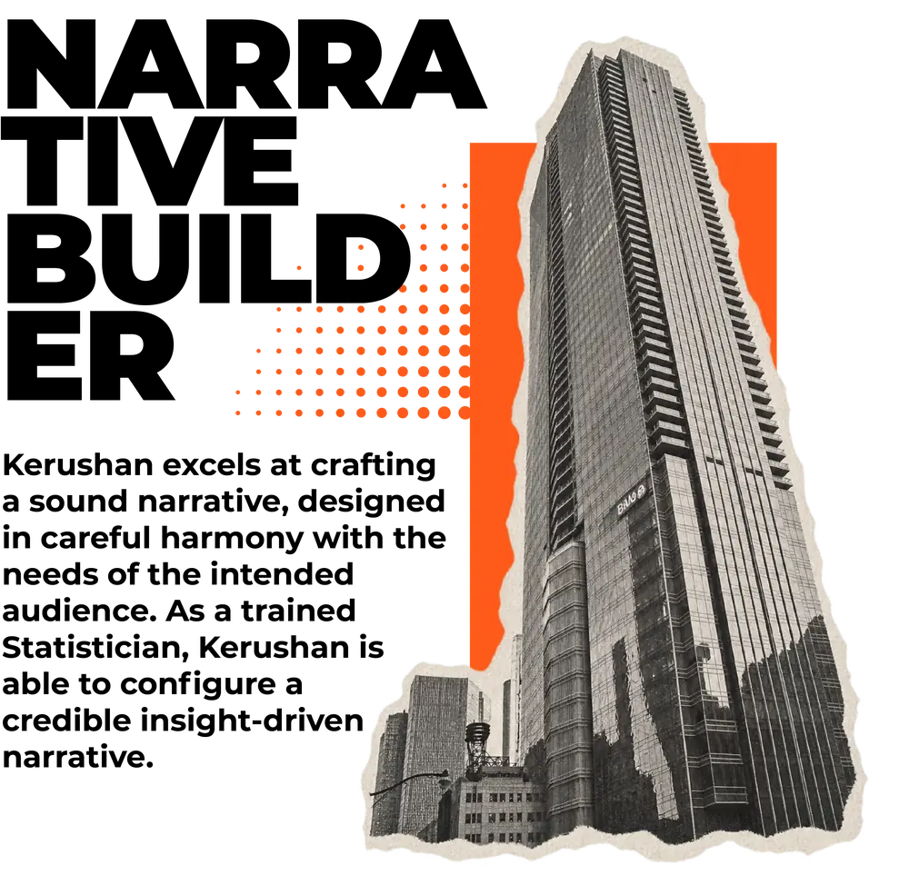
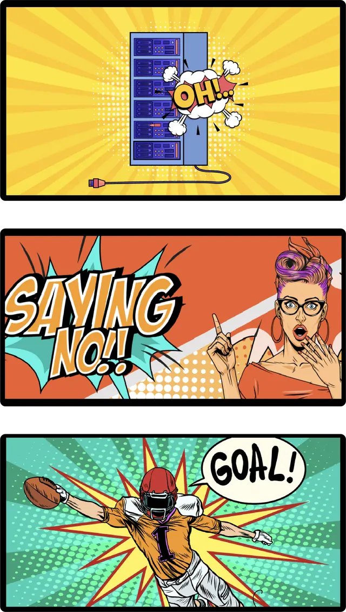
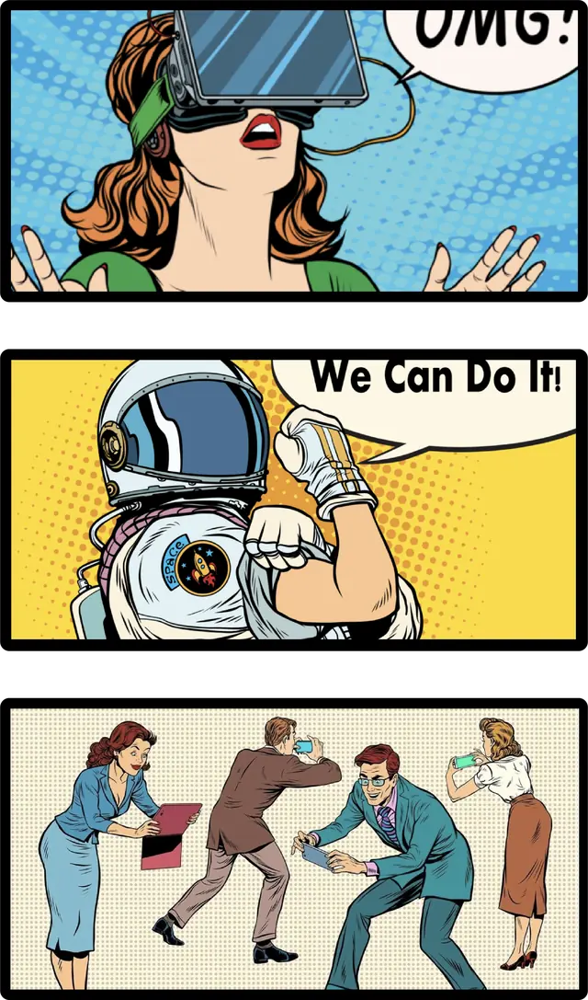

Simplified
Monetiseyourpassionwith digital.
Author of Age of Agency: Rise with AI, host of Table Manners for Robots and international speaker.


The online show
At the end of theday, we want aworld of X-Men.
At the end of the day, we want a world of X-Men where each person has the opportunity to show their specific superpower. How can we use tech as an enabler of human performance? What basic and doable steps can we take in day-to-day work that unleashes greatness?
The show lines up an impressive array of guests. The primary goal is to engage in a rich technology conversation in a very human way. We never let go of the ideal that the sole purpose of tech is to bring out the best in people. We don’t like theorists and insist on guests who are relevant, practical and in-touch.
As much as the show is about “serious stuff” no opportunity for a bit of fun is missed. Who is going to say no to a quick opportunity to escape the mundane on a Wednesday morning?

Why humanise digital?
The role ofpeople in adigital world
As we move furiously, at increasing pace, into a digital era and beyond, the role of the human is more prominent than ever. Digital is entirely useless in the absence of its master, the humble human. For the simple reason that digital is an enabler of human ambitions, we need to actively see to it that people are not left behind in the digital evolution. More importantly, by reorienting the purpose of tech squarely toward human benefit, we mitigate against creating tech for the sake of itself.


Stay in touch
If you want to receive free content to help you monetise your passion, subscribe here.
What people say
Very few speakers have the ability to captivate an audience and keep their attention beyond their introduction. I have been an audience member of Kerushan Govender’s presentation a number of times and have always been impressed and inspired by his ability to keep his audience’s attention to the very last word. Kerushan brings energy and enthusiasm and provides clarity of message to his audience while also demonstrating his business and people leadership skills and entrepreneurial spirit through his messages.
Kerushan is a wonderful speaker and his content is on point! He’s very engaging and easy to listen to! I will definitely try to hire him to speak at our event – if I can get him!!
Thanks for the great friend, Kerushan Govender comes from Dubai, gave Taiwan so much help with high spirit!!! You have great enthusiasm in your profession, you are a very inspiring person and influenced many of us in your speech. We love you!!!
I have seen Kerushan Govender speak on many topics over the last 3-5 years. Each time he seems to hit the crux of the issues with absolute sharpness while creating an engaging atmosphere with all in the audience whether many or few.
I must say I experienced one of the most power-packed, mind-blowing seminars that I have been to. Kerushan was not only energetic but he made sure that the information presented was easy to understand and engaged the audience strongly. I had so many take-aways from his seminar but the key takeaway was that I was able to see how I can recognise the source of a problem and handle it which helped me debug situations in my business and in life. Thanks Kerushan for your awesome seminar in New Delhi!
KG has the amazing ability to talk to a large group and I felt he is only talking to me – the connection with the topic and relating it to the audience is a major strength. KG is articulate, without speaking over the heads of the audience. On stage or when speaking to one or two people, he has a presence that makes the audience want to listen. He is calm, engaging and puts his views across in a manner that ensures the audience gets it.
I wish to extend a note of gratitude to Kerushan for his immense contribution that he has made to the Institute and its members during our various key events. Drawing on his experience, insight, expertise and knowledge, he has impacted the growth of both the Institute, and her members’, and it is always a pleasure to work with him. He has made a sterling contribution to three senior-executive management conferences.
An online show
With adifference
Technology enthusiast and Microsoft veteran Kerushan Govender hosts a fun and engaging show about tech in the workplace. Using a precision questioning style, Kerushan unearths quick ways to bring out the best in everyone.
Want to be part of our live studio audience?
Episodes
Browse through our episodes
Season 3
Season 3 Premier
We launched the third season of Table Manners for Robots. The show format has been upgraded. We had a ton of feedback and questions from the live audience. Unfortunately, in the excitement of things, I didn’t get to many of the comments and questions. But, I made a promise to provide answers to all questions in the next and future shows. Videsha Proothveerajh, CEO and Chairperson of the Board, Lexis Nexis South Africa, opened up the discussion with a frank and open discussion on the potential she see’s in Africa. She talked about some of the exciting work she is leading, together with some of her personal experiences as a mother and CEO. Dr Nick Bradshaw, the leader behind AI Expo Africa, shared valuable insight on the state of 4IR in Africa. I was curious to understand the state of progress in Africa together with Africa’s unique contributions to the development of 4IR technologies. Nick addressed my questions and left me with a lot of confidence about where things are headed.
Season 2
A great grand finale indeed – Unite for Small Year-End Finalé
With Dumisani Moyo. We closed off our final 2020 season of Table Manners for Robots with a bang! What a fun episode. Dumisani Moyo, Head of Midmarket at SAP Africa joined us as our expert guest. Dumi has a characteristic way of sharing pearls of wisdom in an easy and light way. It was a pleasure listening to him share his perspective on how dramatically business is evolving right now.
Creative Business Solutions
With Martin Boruvka and David Creecy
Medium business challenges in a post-pandemic world
Post pandemic “finance for non-financial managers”
How to capitalise on the opportunity in the food industry
How to survive the pressure of regulated industries through the pandemic
Getting people management right through the difficulty of Covid-19
Managing a legal practice in the new world
With Victor Van Der Watt and Louis Podbielski
Setting up e-commerce for post pandemic businesses
How to manage inventory post COVID-19
With Martin Van Blerk and Jenny Van Blerk
Season 1
How to outmanoeuvre the dramatic shift in South African consumer behaviour
A magical mid-week escape
With Larry Soffer and Greg Orme
Take Back Control Of Your Data
With Iniel Dreyer from DMP SA and Steve Botha from Aveng
Get a firm handle on your costs
With Andy Strathearn and Rhiedwaan Valley from Plan-IT
Getting Things Done In A Remote Workplace
With Isabel Papadakis from SAP and [SECOND GUEST — confirm on live page]
Reducing landline costs in a remote work environment
Watch
Episode recordings


Blog
Articles

Navigating the 4 Phases of AI Adoption
When it comes to Artificial Intelligence (AI), the adoption of it is inevitable. However, the path towards effective AI integration in our personal and professional lives is not simply straightforward…

Saying No
In the professional sphere, the impulse to automatically say "yes" can be a powerful force. Whether driven by the desire to please, fear of conflict, or the ambition to excel, this reflex can sometimes lead us astray.

Unleash Your Superpower: How Artificial Intelligence is Revolutionizing Entrepreneurship
We are living in the age of agency, where technology has empowered individuals to pursue their passions and create their own paths to success…

Are you still using a generator to power your server room?
You are not alone. With the most recent spate of load shedding ravaging our country, many businesses in South Africa find themselves at the mercy of harmful…

My basic purpose
I'm often asked why I do what I do. I know the answer deep down, but I rarely publish it. During the global shock of COVID-19, I had no choice but to confront…

Seriously, is that a lawnmower? Basic etiquette for online meetings
During a time like this, virtual meetings are a necessity. These can be agonising if not done right. I used to work from a Dubai office while my extended team…
Free resources
Guides, cheatsheetsand infographics.

Discover How AI Can Transform Your Day-to-Day Operations
View
AI for Startups: Quick wins for South African startups
View
The complete Google Chrome Shortcuts cheatsheet
View
Complete cheatsheet for Microsoft Office
Learn more
Ultimate cheatsheet for Microsoft Excel
Learn more
Do we downsize? Guide
View
Complete cheatsheet for Microsoft Word
Learn more
The Complete Guide to Online Meeting Etiquette
Learn moreFree Personal Transformation Board
Learn more
The effectiveness of remote work Infographic
View
Challenges in Modern WorkPlace Infographic
ViewAbout
AboutKerushan
I hold firmly to the belief that every person can offer their calling to this world, no matter the constraint. Every person has their value to offer and should never have to suppress this native impetus toward service. I derive my greatest joy, ultimately, from helping people realise this dream.
The pressures of life, aka a scarcity of money and time, cause many to put aside this dream. Thus, my claim would be nothing in the absence of my greatest and most demonstrated gift:
The ability to out-maneuvre constraints and make a lot from little.
Using an odd combination of why finding and outright creativity, I thrive on maximising the effect of limited resources. Every person can start toward their dream. In the presence of the right plan, spelling out the clever use of available resources, a dream is realised despite towering adversity. There are no excuses.
This skill in growth planning lends itself well to sales and marketing organisations. A no-nonsense mindset of “let’s make something from nothing” is always welcomed by this fraternity. This would explain my long stay at Microsoft. But this isn’t the complete explanation.
Let’s use the term multiplier-effect to refer to making a lot from little. Inherent in this multiplier effect is the concept of efficiency and systemisation. Now, systems need not always be digital, but today, they mostly are. And it is a waste of resource to endeavour any kind of multiplier-effect in the absence of digital.
It is for this reason that I am a strong technology evangelist. My goal is steadfast in the direction of helping people bring their unique magic to the world. I see technology as a fundamental enabler. This is why this blog is about humanising digital. It is about helping people realise dreams, while exploiting technology to out-maneuvre constraints.
My work on this platform is funded by my company, Blacfox. Through Blacfox, I put my growth skills to good use servicing technology companies. The union of this platform and Blacfox is perfect in every respect. I get to live my purpose by helping people bring their dreams to life. In turn, we support technology companies, making Blacfox happy.

A more formal bio
Kerushan Govender
Kerushan Govender is a serial entrepreneur with several investments in SA and abroad. He has an extensive career spanning the technology and investment banking sectors, including about 10 years in various leadership roles at Microsoft. More recently, Kerushan was Area Head at Microsoft, based in Dubai, responsible for the Public Sector business across the Middle East and Africa. After leaving the Middle East, Kerushan helped set up a company in the US in partnership with a Forbes list billionaire, before returning to SA in 2017.
As a Statistician and Economist by postgraduate training, Kerushan is uniquely positioned to combine a scientific approach with deep on-the-ground business experience, producing novel business frameworks and solutions. Early on in his career, Kerushan spent a year training across Europe and the USA, applying technology to business problems. This training, together with decades of business experience has equipped Kerushan to simplify and demystify the technology conversation for all.
Kerushan continues to study, research and serve clients in the area of his passion: digital transformation. He has been featured in several news publications for his innovations, involving a provisional patent in forecasting, and recently appeared on a talk show on NBC in the USA for his ideas on people-driven computing.

Coffee & Goals
Coffee &Goals
with Kerushan Govender
I’m not sure how things are going for you, but recently, I felt a bit of the mid-year blues. I guess I needed a bit of a “booster” to refuel my drive toward my 2022 goals. So I dug up a few business articles that gave me just the dose of inspiration I needed. I felt so good after reading these that I wanted to share them with as many people as possible.
Then I had a bright idea. Why don’t we get a few like-minded people together? Almost like a support group for goal-driven individuals. This way, we can all benefit from a dose of business inspiration from time to time. I mean, who doesn’t have a day where a bit of extra inspiration might help?
So I’m taking the bull by the horns and making the first move. Come join me for a “Coffee & Goals” chat at our premises in Century City, Cape Town. At a minimum, you will be treated to a delicious coffee and an hour of uplifting banter. There is no cost to you for attending.
If you’re not in Cape Town and would like to join, we’ll send you a Zoom link.

This book is about monetising your passion. It is a practical handbook that gives the reader actual tools and methods to do so. Many people believe that it is not possible to earn handsomely doing what you love. In fact, many relegate their labour of love to mere hobbies or pastimes. But working a job you love does not have to be pipedream. That mindset was more valid a few years ago than it is today. Thanks to the availability, accessibility and adoption of today’s powerful technology, there is hardly a problem that cannot be solved when technology is applied to it.